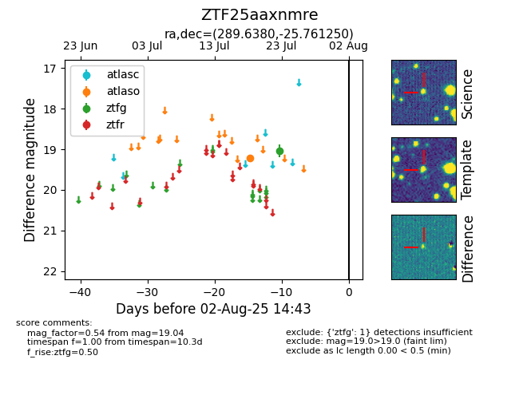

Target ZTF25aaxnmre at 2025-08-02 14:43, see:
FINK: fink-portal.org/ZTF25aaxnmre
Lasair: lasair-ztf.lsst.ac.uk/objects/ZTF25aaxnmre
ALeRCE: alerce.online/object/ZTF25aaxnmre
alt names
ZTF25aaxnmre (ztf,fink)
coordinates:
equatorial (ra, dec) = (289.6380,-25.76125)
galactic (l, b) = (12.2094,-17.02493)
photometry
last atlaso=19.21, ztfg=19.04
1 atlaso, 1 ztfg detections
